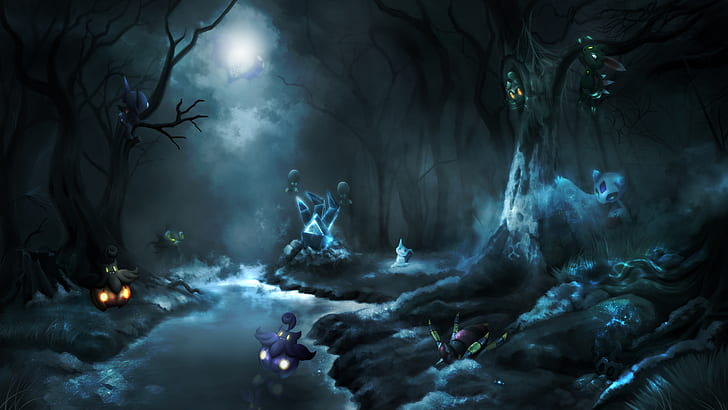

<!DOCTYPE html>
<html lang="es">
<head>
    <meta charset="UTF-8">
    <meta name="viewport" content="width=device-width, initial-scale=1.0">
    <title>Bosque Profundo | Sin Pikachu</title>
</head>
<body>
    <aside>
        <h2>Exploras aun mas el bosque profundo</h2>
        <p>PIKACHUUUUUUUU</p>
        <p>Retumba el bosque con tus gritos, intentando localizar a Pikachu, pero tropiezas sobre una roca y caes en un barranco.</p>
        <p>Dejando caer a Gengar y Dragonite.</p>
        <p>Al intentar recuperarlos, solo puedes apreciar como la sombra se los lleva a ellos tambien.</p>
        <p>Estas solo, en un bosque hostil y peligroso para un niño de 12 años (que pligrosa la franquicia pokemon pa los niños xd)</p>

        <figure>
            
            <figcaption>Profundo del bosque verde</figcaption>
        </figure>

        <nav>
            <ul>
                <li><a href="salir2.html">Salir sin tus Pokemons</a></li>
            </ul>
        </nav>

    </aside>
</body>
</html>
